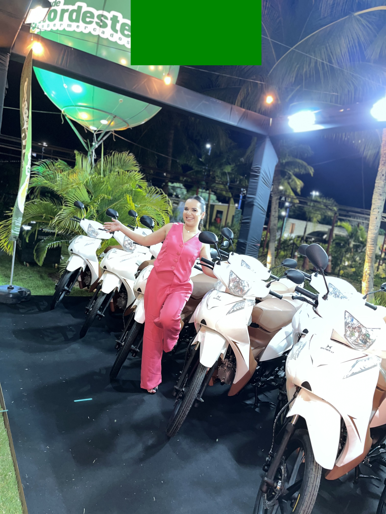
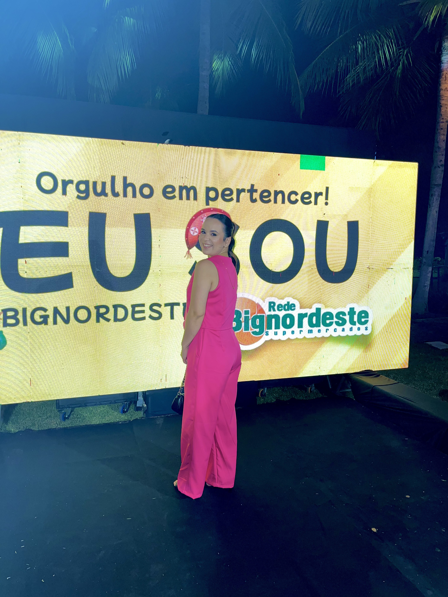
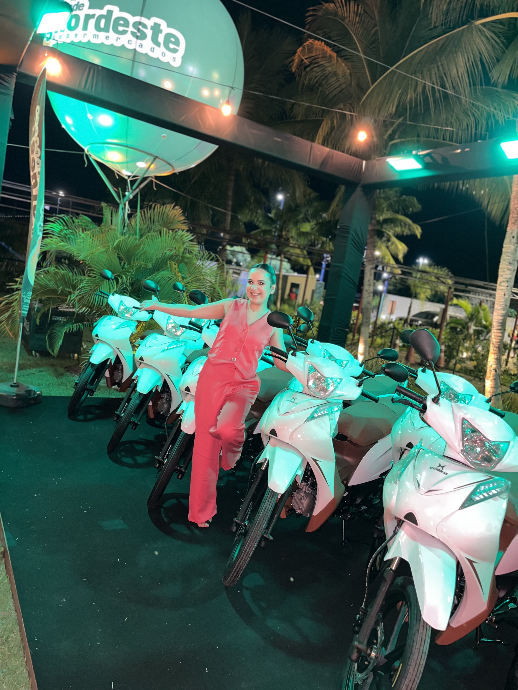
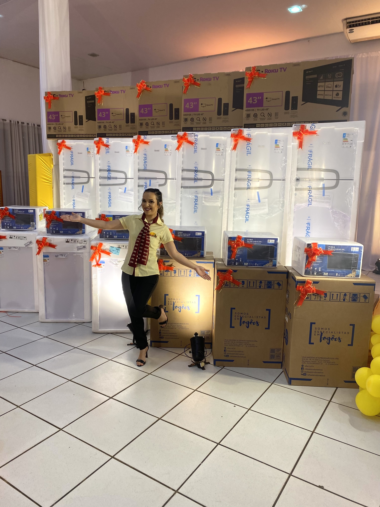
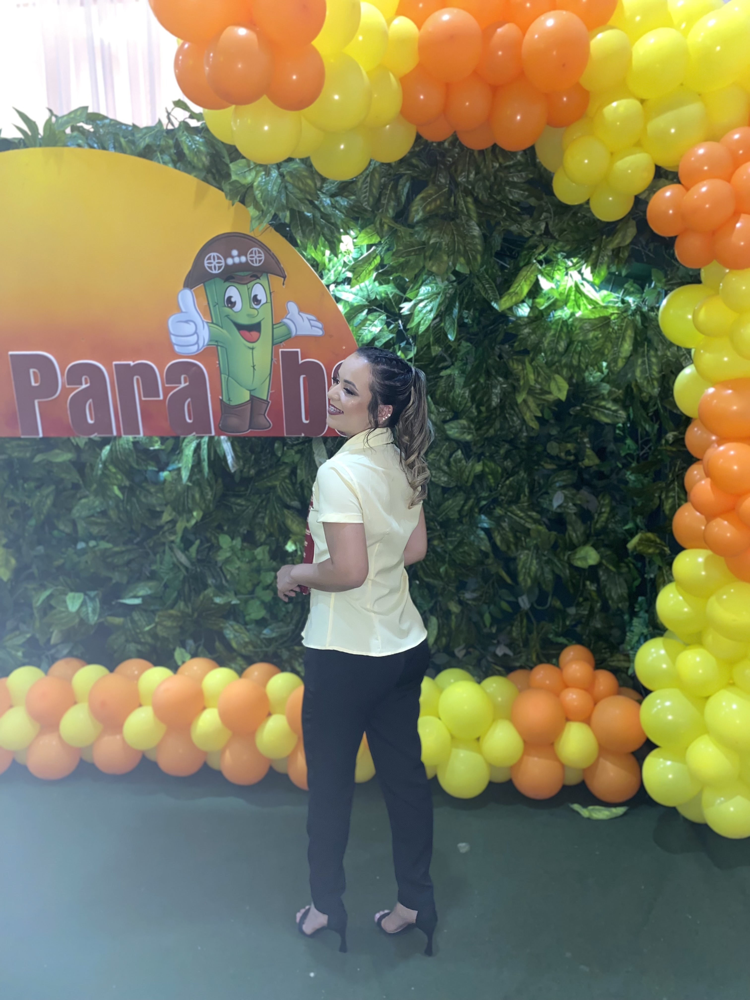
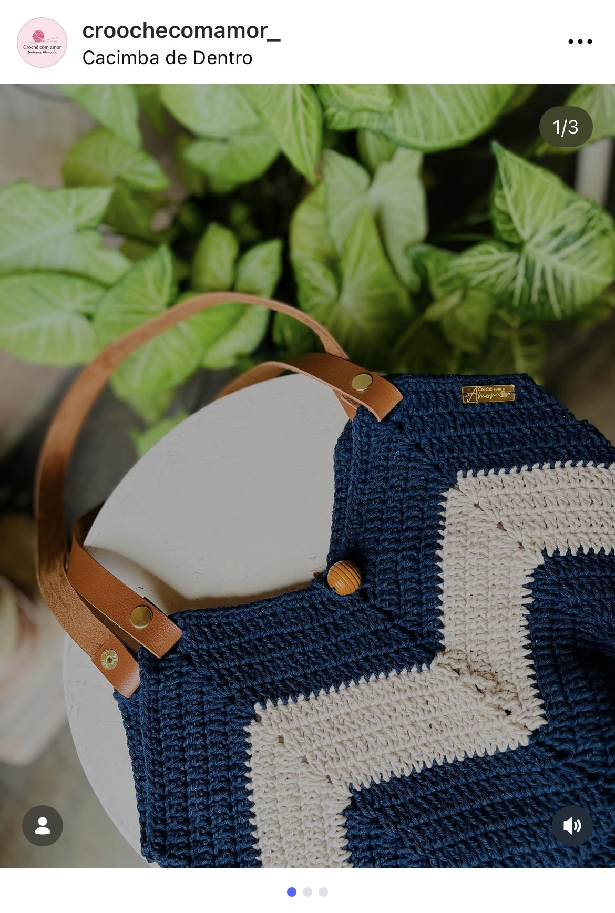
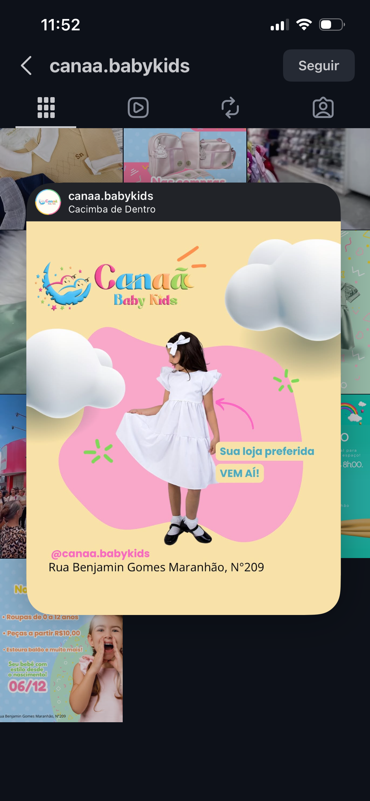

A paixão por conectar marcas e pessoas
Atuar estrategicamente no Marketing e como Social Media ativa aos 25 anos não era o plano inicial, mas transformou-se na minha maior realização profissional. Minha trajetória começou aos 16 anos, logo após o ensino médio. Atuando no atendimento direto e no controle operacional, descobri minha verdadeira paixão: a troca com o público e a análise de comportamento de consumo.
Após passagens consolidadas por segmentos de moda, calçados e perfumaria, compreendi que meu olhar analítico convergia para a comunicação visual e a fotografia. Minha mente buscava constantemente criar formas de vender mais e ampliar o alcance dos negócios. Embora o mercado tradicional nem sempre dê espaço para a inovação de quem está na linha de frente, usei esses anos como o laboratório perfeito para o que faço hoje.
"O crescimento sustentável no digital não é fruto do acaso, mas sim de uma estratégia refinada e bem executada."
Resultados Baseados em Dados e Criatividade
Iniciei minha jornada de forma independente na fotografia de eventos, edição de vídeo e design digital, aprimorando a técnica de contar histórias visuais que retêm a atenção.
Rede Paraíba, 2023
Nincho de rede de supermercados, trabalho orgânico realizado de forma presencial, com stories diários, e campanhas da mesma categoria. Trabalho que trouxe a explosão do marketing, com o aumento de seguidores diário, e meio milhão de acessos no perfil, diários.
Rede Bignordeste, 2025
Nincho de rede de supermercados, trabalho orgânico realizado de forma presencial, com stories diários, e campanhas da mesma categoria.





Outros Serviços
Artes Digitais
Criação de ilustrações, banners, materiais ricos e peças visuais personalizadas para o seu negócio ou projeto.
Artes Comemorativas
Identidade visual e papelaria digital para eventos, datas especiais, homenagens e celebrações marcantes.
Convites
Convites digitais e interativos para casamentos, aniversários, formaturas e eventos corporativos.
Logo
Criação de logotipos exclusivos, modernos e profissionais que traduzem a essência e o posicionamento da sua marca.
Posts
Design estratégico para redes sociais (carrosséis, posts estáticos e templates) focados em engajamento.
Vídeos & Coberturas
Captação, edição de vídeos (Reels, TikToks, institucionais) e cobertura audiovisual completa de eventos.
Trabalhos em Destaque







Visão Macroscópica do Digital
Cada peça de design, linha de roteiro ou edição final segue uma metodologia triangular de crescimento orgânico focado em posicionamento premium.